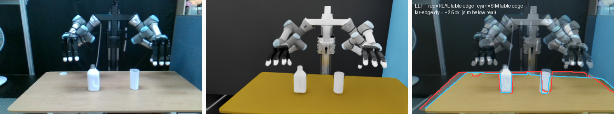
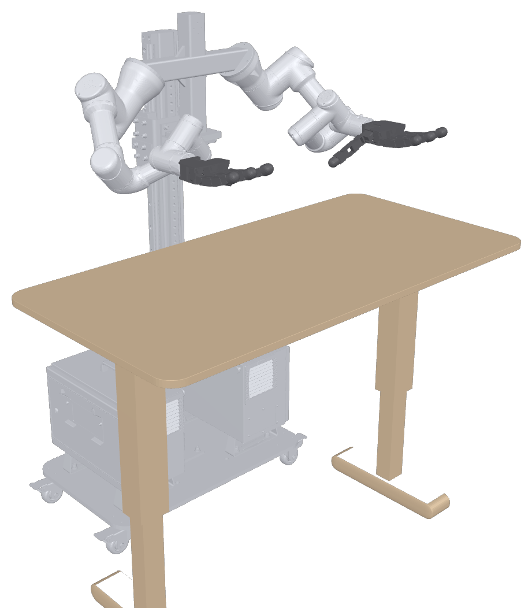
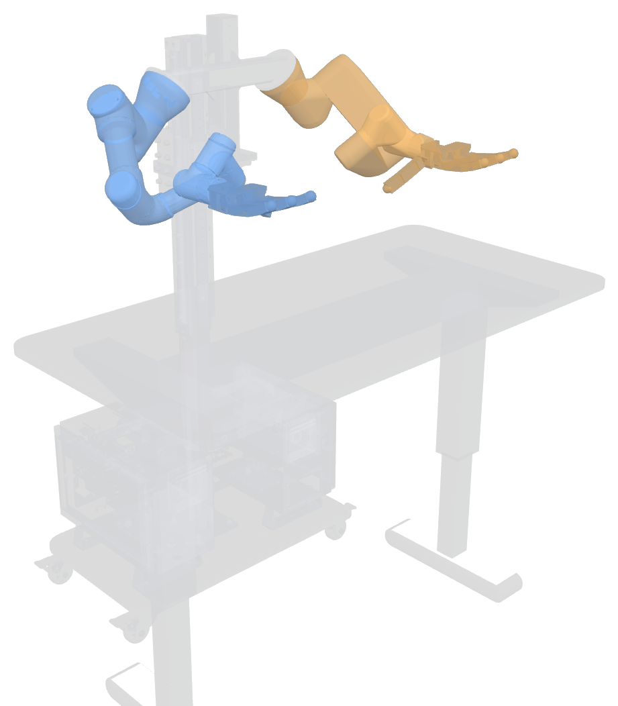
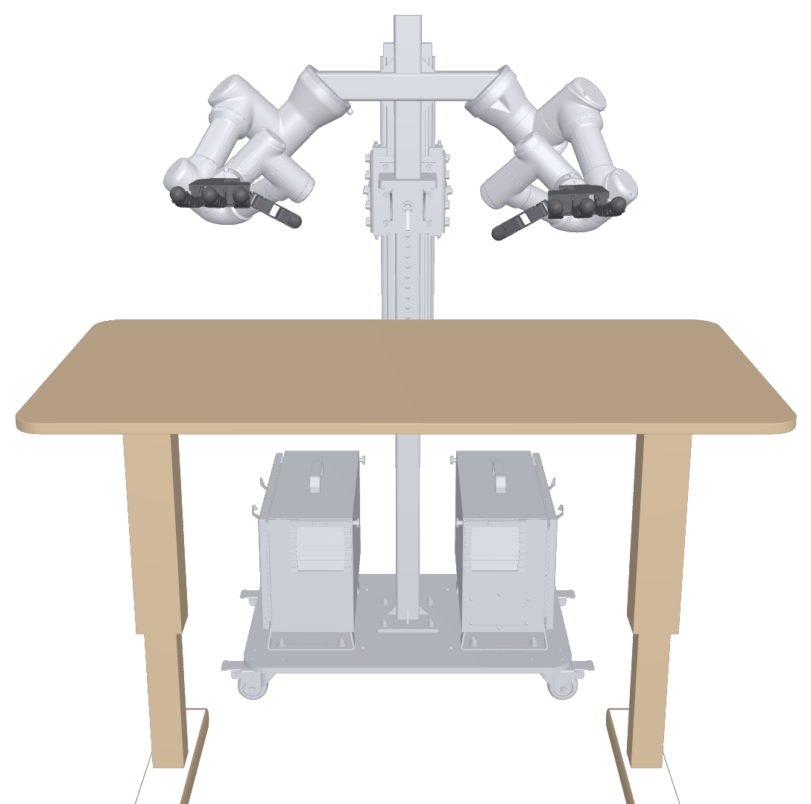
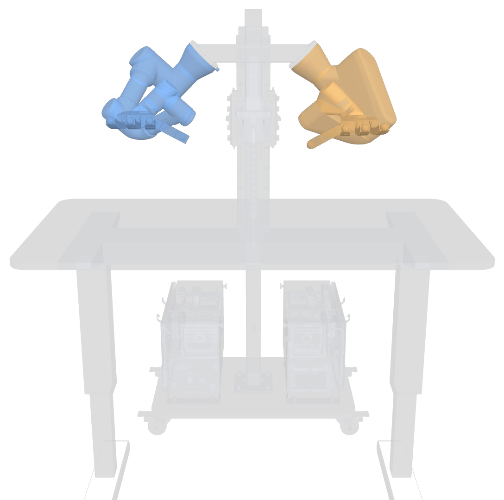
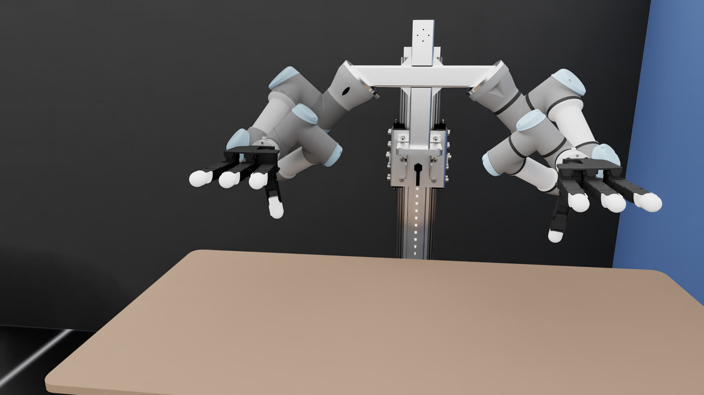
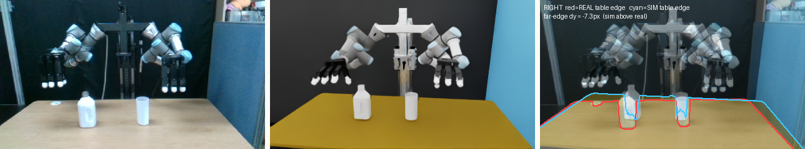

The workspace that brings up a bimanual torso: two Universal Robots arms, two 16-DoF Allegro Hand V4 over PCAN, three RealSense cameras, a calibrated URDF with collision geometry, and bridge nodes so any program (a learned policy, a grasp planner, teleoperation) can drive the cell with joint-position topics.

Left to right: the real cell, its URDF twin from the same calibrated camera pose, and the overlay (red = real table edge, cyan = twin).
/joint_states at 100 Hzcamera_info_url, and extrinsics are published as static TFs to world.The URDF is generated by xacro at launch: world, T-shaped stand and table, a UR3e and a UR3 with their factory
kinematic calibrations, and an Allegro hand on each flange (prefixes la_ / ra_). The same model
is exported to Isaac Lab for sim-to-real work.






Pick-and-place over 10 objects, driven through these drivers (right arm + right Allegro), with FoundationPose perception and BODex grasp synthesis.
From dexterous-pick-and-place (94/100 hardware trials), 3× speed.
| component | model | connection | prefix |
|---|---|---|---|
| right arm | UR3 | Ethernet 192.168.0.120, External Control | ra_ |
| left arm | UR3e | Ethernet 192.168.0.121, External Control | la_ |
| right hand | Allegro Hand V4 (P231) | PCAN-USB, channel 33 | ra_ |
| left hand | Allegro Hand V4 (P249) | PCAN-USB, channel 32 | la_ |
| cameras | RealSense D415 ×3 | USB 3 | front_right, extra, front_left |
git clone https://github.com/ismael-esp/dual-arm-allegro-ros2.git && cd dual-arm-allegro-ros2
bash scripts/install_pcan_host.sh # host: PEAK pcan kernel module
bash docker/build.sh # ROS 2 Jazzy + ros2_control + UR + MoveIt + librealsense + PCAN libs
bash docker/run.sh # repo mounted at /home/dev/ros2_ws
bash scripts/setup_workspace.sh # pinned upstream drivers + RealSense patch + colcon build
source install/setup.bash
ros2 launch my_dual_robot_cell_control start_system_drivers.launch.py # real robot
ros2 launch my_dual_robot_cell_control start_robots.launch.py \
la_use_mock_hardware:=true ra_use_mock_hardware:=true # no hardwareThe README covers robot-side setup, commanding the cell, configuration, calibration and troubleshooting.